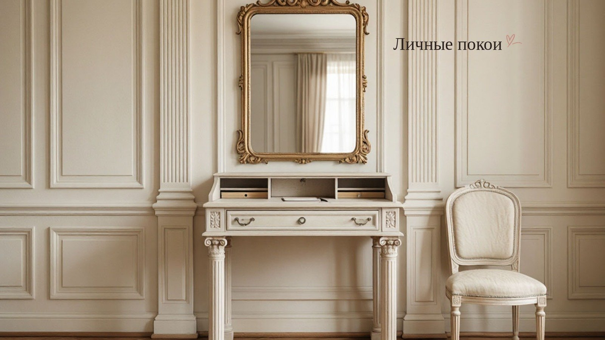
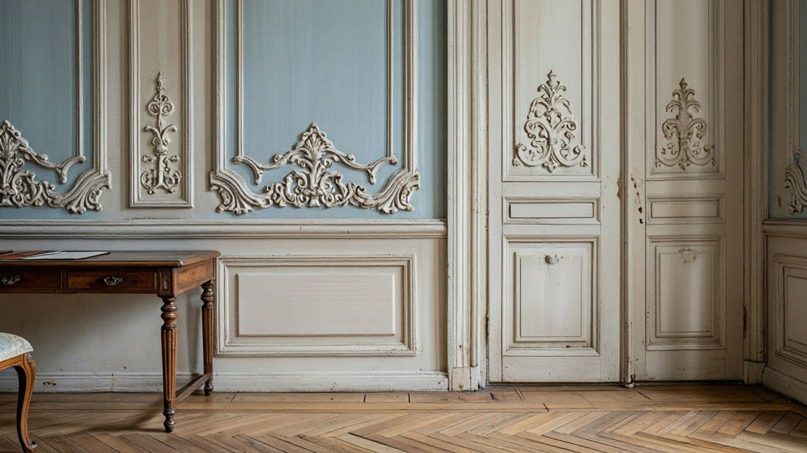
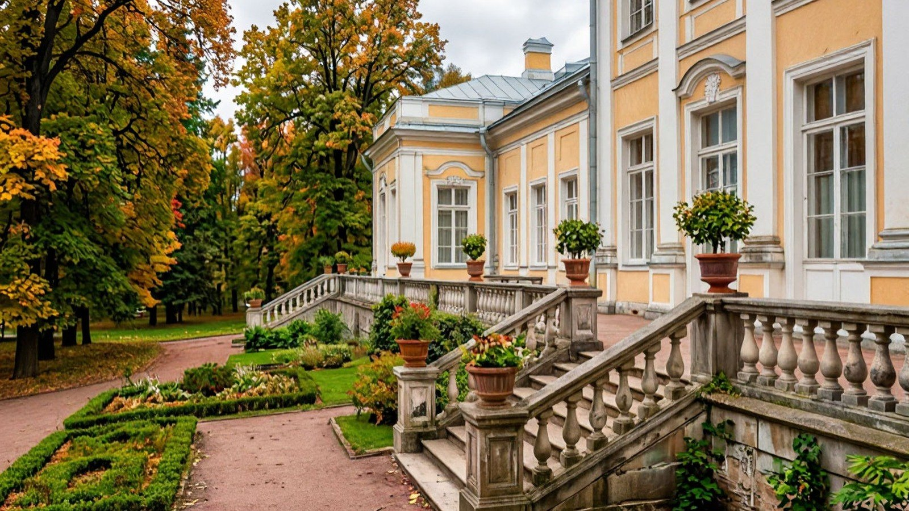

Личные комнаты Екатерины II в Царском Селе: совсем не парадная роскошь

В Екатерининском дворце легко задержаться перед позолоченными залами и забыть, что у императрицы были комнаты совсем другого назначения. В них не устраивали парадных приёмов: здесь проходила та часть дворцовой жизни, которую редко показывают на открытках.
Личные покои Екатерины II интересны не скромностью. Скромными их назвать трудно. За дорогими материалами и тщательно продуманным убранством скрывался иной замысел: место для работы, чтения и выхода к саду.
От пышного барокко к сдержанному вкусу
Екатерининский дворец знаменит интерьерами эпохи Елизаветы Петровны. Но во второй половине XVIII века в моду входил классицизм с ясными пропорциями и отсылками к античности.
Екатерина II следила за этой переменой. При ней дворец расширяли и перестраивали, а личные апартаменты оформляли по новым представлениям о красоте.
В 1779–1785 годах пристроили флигель, позже названный Зубовским. Здесь была собственная половина императрицы с отдельным входом.
Важно не путать её с парадными залами: частная половина всё равно оставалась императорской резиденцией. Но её назначение было другим.
Серебряный кабинет и комната по прозвищу Табакерка

В личные апартаменты входили Зеркальный и Серебряный кабинеты, Синий кабинет, известный как Табакерка, Опочивальня, Рафаэлевская и Туалетная комнаты. Были также Китайский и Купольный залы.
Названия комнат сохранили характер интерьеров: от зеркал и серебристого декора до синей отделки, из-за которой один из кабинетов получил прозвище «Табакерка». Это были самостоятельные интерьеры.
В создании ансамбля участвовали архитекторы Чарлз Камерон и Джакомо Кваренги. Вместо тяжёлой барочной пышности появились орнаменты, зеркала и тщательно подобранные материалы.
Здесь важно было не количество золота, а согласованность каждой детали.
Утренние дела среди сада и камня
Особенно любопытна связь дворцовых комнат с парком. От Зубовского флигеля через Висячий сад можно было пройти к павильону «Холодная баня» с Агатовыми комнатами.
Это был не банный комплекс в нынешнем смысле, а изысканный павильон с особенной отделкой.
По сведениям музея-заповедника «Царское Село», в утренние часы в Агатовых комнатах Екатерина читала, просматривала государственные бумаги и отвечала на письма.
Сад и роскошная отделка не отменяли дел: государственные бумаги и письма оставались частью дня. Музей сообщает об этом занятии, но не даёт оснований придумывать точный распорядок каждого утра или разговоры, которые могли происходить здесь.
Висячий сад как часть личного маршрута

Висячий сад связывал покои, галерею и павильон. Это была не просто клумба повыше земли, а важная часть архитектурного замысла.
Из сада можно было перейти из одного пространства в другое, не проходя всю торжественную анфиладу дворца. По соседству находилась Камеронова галерея, откуда открывались виды на парк.
В начале 1792 года императрица пожелала устроить дополнительный спуск из Висячего сада в Екатерининский парк. Это ещё один штрих к тому, как продумывались перемещения между комнатами и садом.
Получается необычное сочетание: в одном комплексе находились и представительные помещения, и личные комнаты, и место для прогулки. Всё рядом, но с разным настроением.
Почему сегодня мы видим воссозданные комнаты
У этой истории есть печальная часть. Во время Великой Отечественной войны помещения Зубовского флигеля сильно пострадали от огня и разрушений.
Поэтому нельзя считать нынешние интерьеры полностью сохранившимися комнатами XVIII века. Их воссоздавали специалисты, опираясь на исследования, исторические материалы и сохранившиеся сведения об убранстве.
С 25 декабря 2024 года восстановленные личные комнаты открыли для посетителей. За красивыми фотографиями скрывается большая работа реставраторов, а не просто уборка старого дворца.
Эта оговорка важна: история становится интереснее, когда мы знаем, что именно дошло до нас, а что пришлось возвращать по документам.
Что рассказывает эта половина дворца
О Екатерине II обычно говорят через реформы, войны, дипломатические решения и громкие имена её времени. Но личные комнаты показывают другую сторону той же эпохи: как менялась мода, какое место занимали книги и письма, как архитектура связывала дом и парк.
Не нужно придумывать разговоры у окна или угадывать мысли императрицы, чтобы увидеть характер этого пространства. Достаточно пройти мысленно от парадных залов к кабинетам, а затем к Висячему саду.
Личная половина дворца напоминает: даже в императорской резиденции важно различать пространства для гостей, для дел и для отдыха. Если вам интересны такие подробности истории домов и их обитателей, заглядывайте в «Красиво жить».
Какая деталь запомнилась вам больше: Синий кабинет по прозвищу «Табакерка» или путь из комнат к Висячему саду?